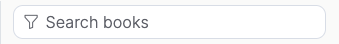
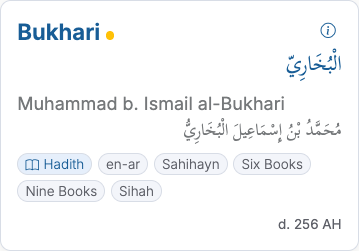
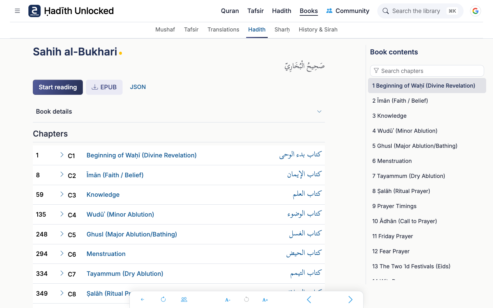
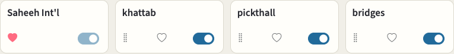
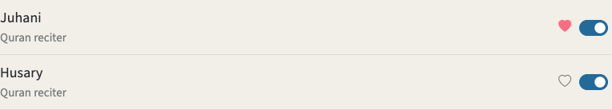
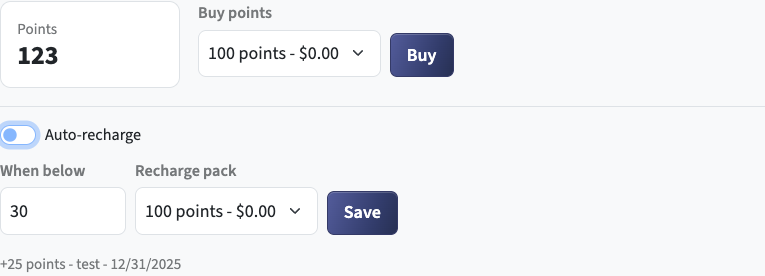

Settings, email preferences, and the book catalog establish the first patterns for navigation, preferences and feedback. Each entry records a control in use and the behavior another page can reuse.
Current decisions and route status
Makeover work lives on ux-makeover. Ivory is the selected palette, Midnight is the primary action treatment, and Settings is the reference for interface hierarchy. The shared tokens and specimens are recorded under Foundations.
Template ownership
Use the canonical EJS entry for each route. The template inventory records each entry point and shared include. All six catalog collections render through books.ejs. Standard HTML pages share page_end.ejs for their footer and scripts. Unsubscribe pages omit application scripts, shared notes keep their private standalone document, and Atom and RSS retain their XML output. Use modal_close.ejs for Bootstrap modal dismissal and supply its accessible label.
Reader introductions · under review
Hadith and Quran commentary introductions use the bilingual book heading from the contents page. Each title links back to its own book. Tafsir and translation passages share the surah heading, navigation trigger and bookmark control.
Hadith homepage · approved
Open with Beginner Books in the order Nawawi’s Forty, Ibn Rajab’s Fifty, Riyad al-Salihin, al-Adab al-Mufrad, Shamail and Mishkat. Follow with a Twelve Books shelf comprising the Nine Books plus Ibn Hibban, Hakim and Daraqutni. Include the two companion collections, al-Lulu wa-al-Marjan immediately after Muslim and Mishkat at the end. Use one “Hadith library” heading and place the three collection tabs and search field together below it. Use bilingual covers for Beginner Books and Twelve Books. The Other tab lists the remaining titles alphabetically, including History and Sirah. Beginner Books and Twelve Books use the same approved carousel at every screen size, with the selected book centered and neighboring covers visible. The proposed cover finish uses fine leather grain, warm gilt Arabic lettering and a repeating sequence of distinct binding colors in shelf order. Swipe, use the arrow controls, or tap a neighboring cover to select it. Activate the centered cover to open its contents. Beginner Books is also a catalog tag. Searching a title or author includes the whole directory. Clearing the field restores the selected shelf. Keep the random reading and Community articles accessible below the books. Both homepages open directly to the library or Quran contents. Put site introductions on About, linked from the footer. Practice and review offer on-demand help without guided tours.
Translation requests · retired
The former Hadith translation request list and its Atom and RSS feeds return HTTP 410. The translation catalog, readers and on-demand translation tools remain available.
Application controls and admin editing · under review
Use Ivory surfaces, Inter interface text and Midnight actions across discovery, readers, Community, personal tools and administration. Size interface page titles from the root type scale so compact mobile containers keep the Settings hierarchy. Keep script-specific text and Markdown reading typography. Use a Midnight primary action for saving, a tinted secondary action for opening a manager, and a danger action for removal. Bound admin fields use a dashed outline at rest and a solid focus ring when active. Text fields save on leaving, selects on change, and commentary fields with a Save button keep explicit submission. Show a pending state during submission and keep a failed field available for correction and retry. Regression coverage and commands
Overlay dismissal · shared standard
Use the same X button to close a modal dialog or an off-canvas rail throughout the app. Close button specimen
Books and Settings · shared layout standard
Use the same responsive section navigation, page heading, ruled section heading, rail title, local search field, focus ring and card corners. Below 992px the search field aligns with the content edges and leaves one rem before the first section. On desktop it aligns with the rail title. Keep account status with the page title when present.
Settings · branch default
/settings and /quran/settings open the makeover. From 992 px, the category rail shares the Books grid, right gutter, width and sticky header offset. Search stays in the rail and comes before the panels on phones.
Book tables of contents · under review
Expanding a surah shows each passage (H2) followed by its numbered, indented subpassages (H3) and their ayah ranges. Use the History TOC indentation for both the number and the English title at each level, including its narrower phone spacing. In the Quran contents tables, leave a visible gutter between the widest number label and the first surah icon. Allow extra column width for the longer Manzil label. Separate inline surah names with a muted, regular-weight middle dot (·) between entries. Apply the shared shell and heading scale together to Hadith, virtual collections, History, Sirah, Quran, translation, tafsir and Sharḥ contents. Align the English book name to the left edge and the Arabic name to the right edge of the main column on a shared baseline, using heading ink for both. Scale the Arabic book title to 110% of the English heading size. Below 576 px, place the Arabic name on its own right-aligned line. Use the Books collection subnav and its compact picker for Hadith, Sharḥ, History and Sirah. Quran pages use the Quran reading mode subnav. Title the right rail “Book contents”. On Quran contents pages, show the Arabic juz, surah or opening-surah manzil name on the right of its numbered link in the active view. Its full-width search filters the current table and index together, and moves below the bilingual title below 992 px. Place the Midnight reading action at the right edge of the main column. On Quran contents it shares the title row when space permits. Book downloads are temporarily disabled throughout the library. Sharḥ names the covered book in its primary action. Place Book details and the reading action on one row, with the disclosure on the left. Align the leading edge of the circled info icon with the English page title. Align the expanded metadata and description to the disclosure label, with padding above and below. Use spacing alone to separate Book details from the following content. Keep Quran contents modes in the shared view selector. Book actions · Chapter table specimen
Quran reading modes · selected
Use the script and reading mode menu throughout the Quran area, including translation, tafsir, Mushaf, Practice and Mudhakkir. Place the muted Midnight Navigate action first. Use the smaller caption size (0.82rem) below the 0.9rem subnav. Use regular Inter for Navigate, script and mode labels, with medium weight for the current mode. Keep Settings categories and Books collection switching in the masthead above the page title on both variants. The masthead keeps the same row order on Quran variants. Place the reading mode toolbar immediately below the complete site navigation, including its local subnav, and above the page title.
Email preferences · under review
/community/email-preferences uses the Settings masthead, footer, heading scale, switches and Midnight actions. Keep notification choices and author subscriptions in one column. The Back link returns to the expanded Email preferences row on the originating Settings route.
Header, menu and footer · approved site-wide
All application pages use the shared masthead, grouped drawer and compact Midnight footer. The primary links are Quran, Hadith, Books and Community. Tafsir is available in the Quran reading modes, Books collection navigation and drawer. Quran mode navigation remains under review. The masthead stays the same height during scroll. The left menu groups destinations by task and omits individual book lists and the Books shortcut. Books is available in desktop navigation and the footer.
Books · under review
/books opens the makeover. The page title must match Settings at the same viewport. The revised collection navigation, bilingual titles and classification treatment await visual approval. Current Books specimens
On ux-makeover, use standard URLs for redesigned routes. Switch branches to compare with classic. The temporary Books and Settings beta paths were retired before production. When a decision changes, update its entry here or in the linked component section. Record explicit approval to replace a classic route here before changing its default.
Foundations
Interface type
Reading & listening
Quran script
Choose the script used in the reader.
Inter weight hierarchy (under review). Use Light (300) for pills and placeholders, Regular (400) for body text, entered values and metadata, and Medium (500) for section headings, book titles, settings row names and actions. Page titles use Semibold (600). Both routes use the same ruled section heading at 1.3rem. In expanded Settings panels, use Regular for field captions and current values. Global destinations use Medium at 1rem. Collection tabs use Regular at .9rem, with Medium and the Midnight underline marking the current collection. Books and Settings share the same responsive page-title scale.
Color & focus
ActionTextSummaryInset
Lighter Ivory canvas. Use a solid, near-neutral off-white canvas (#FAFAF9) throughout the page. White cards and Midnight headings keep text crisp. Use blue for the current collection and open settings panels. Use ink for text, blue for links and switches, and Midnight indigo for primary actions. Show a two-pixel accent outline on keyboard focus. Palette tokens.
Load the foundation stylesheet and apply ux-system to the adopting page container. Its tokens inherit the active site theme. Quran specimens retain their script-specific fonts. Prose and Markdown typography will enter the library with the first finalized reading or authoring page.
Navigation & discovery
Quran reading mode
Lead with the Midnight secondary action, followed by script, Study, Tafsir, Mushaf, Practice and Mudhakkir. Keep the mode links side by side as space narrows. At a toolbar width of 900 px, shorten Navigate to its compass icon. At 774 px, switch the mode links to the current-mode picker. Keep script selection directly available. The navigation drawer uses the shared close control, inset selector, local search and Midnight menu rows. Match the Books and Settings rails with the shared rail heading, full-width 34 px filters, local navigation text, 44 px menu targets and smaller status text. In both Surah and Ayah tabs, pair the numbered English name on the left with the Arabic name on the right in the same row. In the Page tab, group page links by the Mushaf page containing each juz opening. Pair the juz number with its Arabic name on the right. All five tabs use the same Arabic text size as the Page tab’s juz names. Preserve the current reading reference when switching modes.
Site navigation
The subnav background and borders span the viewport. Apply the width limit and side gutters to the primary header row. Show desktop navigation from 992 px. Use an icon-only search button through 1199 px to give the brand room. The global search button uses an inset surface, the label “Search the library”, and a platform-specific keyboard shortcut. Leave .85 rem inside each end of the desktop pill, measured to the magnifier and shortcut respectively. Below 992 px, a magnifier opens the same dialog. Keep menu, search and account reachable at both sizes. Group the drawer into Read & study, Memorize, Community and Personal. For signed-in readers, Personal starts with the same Profile link and person icon as the avatar menu. Drawer destinations, Settings category links and avatar actions share ux-menu-list. Each row uses regular text, an aligned icon and a 44px minimum target. Hover uses a solid Midnight surface with white text. Keyboard focus adds an inset ring. A current destination uses a quieter tint and medium weight. Dropdown hierarchy (under review): the avatar menu groups identity in an inset header, destinations in one icon column, and Sign out below a divider. Set the identity caption at .82rem Regular, the account name at 1rem Medium and destination rows at .9rem Regular. Mark the current destination with Medium and a tinted surface. Give each row at least 44px of height. On short pages the footer sits at the bottom of the available viewport, above the persistent navigation. On longer pages it follows the content. The footer preview uses a compact Midnight band with a small wordmark and inline links. On phones, each navigation group starts a new row with touch-sized links.
Place the Settings category rail to the right of the panels, with the shared full-width rail search above its links. Books and Settings use the same field, funnel icon, clear button, focus ring and side gutters. Name its scope in the placeholder and accessible label. Below 992px, search moves above the panels and the header subnavigation provides category navigation.
Match nested controls and asynchronously loaded catalogs. Announce the count or empty state. Clear and Escape restore the previous disclosures and return focus to the field.
Disclosure with current value
Group settings by task. Use a native details/summary row with a short label, current value or count, and a chevron. Place the summary below the label on narrow screens. Opening one row keeps the others available.
Book discovery
Book info dialog · under review. Lead with the selected book’s English and Arabic titles. Align Arabic to the right and stack the titles on phones. Keep classification filters and bibliographic details together above the description. Long descriptions scroll between the shared circular close control and a right-aligned Midnight “Open book” action.
The /books catalog uses the Settings hierarchy. Use the shared interface font for collection and group headings, catalog navigation and the right-hand index. Arabic and English book titles share an item size. Kitab retains its own line height for Arabic marks. A narrow Midnight underline identifies the current desktop collection. Book links use the Ivory accent.
Section navigation & local filters

Books and Settings render the same section navigation component. Above 700px, show a horizontal link row. At 700px and below, collapse it into a labeled native picker. Books switches collections. Settings jumps to a category on the same page and keeps search available across categories. Show Search books directly above the rail index. Below 992 px, show the same field above the cards. Use card pills to filter by group or language. Returning from a book restores the search and filters for that history entry.
Bilingual catalog card

Pair the type label with its decorative navigation icon. Hadith and Mushaf use the open book, Tafsir the half book, translations the translation symbol, History & Sirah the Madani artwork, and Sharḥ the annotated journal. Show type, language and classifications as individual rounded pills that wrap between labels. Bottom-align the pill block just above the date row. Reserve the date slot on undated cards in mixed grids. Set all pill labels in Inter Light (300). Tint the type pill blue and use a neutral fill for language and groups. Language pills and their filters use lowercase ar, en and en-ar. A virtual collection qualifies as bilingual when its linked reader entries include English text. Use compact 0.75 rem pill links. A group or language pill filters the collection, and the type pill returns to its full collection. Keep the canonical title link separate from the details button. Use card width to position paired titles. Below 24 rem of usable width, Arabic sits on a right-aligned row beneath English, aligned with the Arabic author. Wider cards use separate columns on one row. Give Arabic its own direction and typeface, and keep source classifications and dates attached to their book. Escape closes details and returns focus to its opener.
Bilingual chapter table · under review

Reserve narrow columns for the start number and chapter control. Let each language wrap inside the remaining space. Keep the expander separate from the reader link so readers can inspect sections while staying in the contents.
Collection index
Use one static heading that names what the rail contains. “Book groups” and “Settings categories” share the same heading component, ink, and type. Place collection-specific group names one heading level below it. Start the page and rail titles on the same row, one rem below the measured masthead. Give both titles a minimum 2.25 rem row, with the smaller rail title centered vertically. Leave one rem after the title before the next section or rail search. Keep a page subtitle with its title. Separate regular-weight book links with a small middle dot (·) beneath each group label. On phones the page title precedes local search.
Choices & preferences
Script preview cards
Use one labeled radio group for an exclusive script choice. Each card pairs a name with the same referenced ayah in its own script and font. Preserve Arabic direction, marks, and line height. The entire card selects the option.
Appearance swatches
Show the actual foreground and background together. Each button exposes its theme name and pressed state. Keep the selected outline visible alongside the sample.
Catalog preferences

Use a switch for inclusion, a heart for the preferred work, and a handle for ordering. Preserve protected entries and show the enabled count. Keep a single-language catalog flat. Offer “Enable all” when entries are disabled.

Tile and Full are two layouts of the same preferences. Full rows give the name and supporting detail more room. Keep the selected favorite, enabled state, and ordering when switching layouts.
View selector
Set Tile and Full in a compact inset track. Give the selected segment a raised surface and accent text. Pair it with a borderless accent action for “Enable all”. Expose the active mode with aria-pressed and retain it after reload. See the rendered catalog toolbar.
Panels & forms
These entries come from the expanded Settings panels. The shared CSS hooks live in the foundation stylesheet. Use them inside ux-system alongside the app’s Bootstrap form markup.
Panel header & toolbar
Use ux-panel-header for guidance or a count alongside contextual actions. At 700 px and below, stack the actions beneath the description. Reading catalogs reuse the text action and inset selector. Email preferences uses the same header with a Midnight secondary link.
Nested disclosure
Use a trailing chevron for both advanced fields and language groups. Advanced limits use native details. A catalog group uses a button with aria-expanded and aria-controls linked to its collapsible list. Keep a single-language catalog flat. See the advanced limits specimen.
Field grid, labels & units
Wrap the fields in ux-fields. Use ux-field-grid for related inputs and selects. Columns fit the available space and align controls below labels of different lengths. Number inputs, select menus, and unit suffixes share a 2.65 rem minimum height. Keep the unit visible next to its value.
Switches & dependent settings
Use the same Bootstrap switch inside ux-fields for catalog inclusion, Drive copies, and auto-recharge. The checked track uses the app’s dark accent blue. Label card switches with the item name and standalone switches with their effect. For a visible label, leave a 0.5 rem gap after the track and align wrapped lines under the first word.
Drive’s switch saves immediately. Auto-recharge groups its switch, threshold, and package under one Save action. Protected catalog entries keep their checked and disabled states. See catalog preferences.
Connection status & actions
Drive combines the existing action hierarchy with a status message. Show Connect when available. Once connected, show Import, Open folder, and Disconnect. Related actions wrap on small screens. A divider separates the optional copies preference from the connection controls.
Inset cards, balance & activity

Use ux-card inside ux-system for the shared card surface, border and corners. Books cards, script previews and Settings catalog tiles use this class. Use ux-inset-card for the same surface with standard inset padding on balances, scheduling groups and advanced disclosures. In billing, pair the balance with Buy, keep auto-recharge in a separate form group, and show recent point changes with amount, reason, and date. With an empty ledger, show “No point activity yet.”
Actions & feedback
Close an overlay
Use a 44 × 44 px circular target with a centered 18 px icon box. The neutral surface deepens on hover. Keyboard focus adds a two-pixel outline. Use theme colors for both light and dark surfaces.
Use a native button with an accessible name such as “Close search”. Bootstrap modal and off-canvas dismiss buttons use the shared style automatically. Custom dialogs use ux-overlay-close. Keep dismissal, Escape and focus restoration with the overlay. Filter removal and field clearing are separate actions.
Action hierarchy
Midnight primary
Use the gradient for the main action in a task, such as starting to read a book, saving a schedule, connecting Drive, or buying points.
Midnight secondary
Use pale indigo for progress, timing personalization, email preferences, Drive import, and payment management.
Tertiary text actions
Keep “Enable all”, folder links, and disconnect lightweight. View segments, switches, favorites, and preview cards communicate selection through their own states.
Grouped edits & advanced limits
Use the same field height, label weight, and focus treatment for review and billing inputs. Let the grid follow the available panel width. Show common fields first. Put category caps and queue order behind a named disclosure. Use the Midnight indigo gradient for Save and the pale indigo secondary action for Progress. A single save action applies the related fields together and reports the result near the form.
Email notification groups
Use a labeled master switch and a fieldset for dependent categories. Turning the master off disables the categories while retaining their choices. Save applies the group. Author subscriptions save independently and report their result beside the author list. Email preferences template
Saving a preference
Ready
Show the saved choice or enabled count in the collapsed row.
Saving
For an immediate choice such as Quran script, show the pending state and disable the choice while the request is in flight.
Saved
Update the row summary and confirm the change beside the control.
Failed
Restore the saved selection or switches. Keep a failed form draft available for retry and exclude it from unrelated saves.
Signed out
Explain when sign-in is needed. Keep account-backed writes unavailable.
Applying the system to another route
Start with the existing component for the task. The shell owns shared navigation and the footer. Foundations owns headings, cards, controls and their interaction states. Keep route-specific layout in the route stylesheet. Shell CSS · Foundation CSS
Markup patterns from the Bootstrap 5.3 refactor
Page and section headings
Use one visible h1.ux-page-title in the page header. Put a subtitle or account status alongside it when needed. Use h2.ux-section-title for major content groups. Give each section one descriptive heading.
Collection tabs and category links
Use the shared section navigation. Books exposes a direct URL for each collection and places its panels in one .tab-content container. Each role="tabpanel" has tabindex="0" and names its tab with aria-labelledby. Settings category links use section fragments and identify the current location. Both collapse to a labeled picker at 700px. Navigation template
Settings disclosures and deep links
Render one native details with a summary containing the setting name and its current value. Keep search aliases in the filter and stable IDs on link targets. A return link into a closed disclosure opens it so the destination is visible. Settings template · Search aliases
Switches and grouped forms
Inside .form-check.form-switch, pair a checkbox with role="switch" and a sibling label.form-check-label whose for matches its ID. Group dependent choices in a fieldset with a legend. Keep the save result beside its action. Email preferences uses one form partial for direct visits and both Settings return paths. Email form template
Verify the rendered page at both sides of the 700px picker and 992px rail breakpoints where applicable. Follow a direct link, navigate by keyboard, click a switch label, and return through the visible Back link. Add a specimen when a route introduces a new control or interaction state. UX audit skill · Control comparisons